De Kasselrij Veurne (Veurne-Ambacht)
1300 - 1500 : Graafschap Vlaanderen
1500 - 1550 : Spaanse Habsburger Keizer Karel V
1550 - 1600 : Spaanse Habsburger Filips II - Alva - Farese
1600 - 1640 : dochter Filips II - Albrecht en Isabella
1640 - 1713 : Franse overheersing
1713 - 1713 : Splitsing Westhoek XL
1713 - 1789 : Oostenrijkse Habsburgers
1789 - 1815 : Franse revolutie - Napoleon
1815 - 1830 : Willem van Oranje
1830 - 201x : Koningrijk België
Het graafschap Vlaanderen
Reeds in 877 werd de plaatsnaam Veurne vermeld in een akte: Furn(a) - een eilandje dat boven de overstroming van de Duinkerke-II-transgressie (het vochtige ommeland) uitstak.
In het jaar 891 werd er een kleine burcht, een "castrum" opgericht tegen de invallen van de Noormannen. Rond die burcht groeide een gemeenschap. In het burchtkerkje vereerde de bevolking de relieken van de heilige Walburga en van haar broers, Winnebald en Willibald. Aan de kerk werd een groep kanunniken gevoegd, een kapittel. Robrecht van Jeruzalem schonk aan de stad een relikwie van het Heilig Kruis.
In 1060 was er al een marktpleintje en een handelsnederzetting bij de burcht van de graaf. Veurne dankte zijn welvaart aan de lakennijverheid en de wolhandel met Engeland. Langs de Bergenvaart en de Calonnegracht werden de goederen gebracht tot aan de kaai (nu Appelmarkt) bij de Sint-Niklaaskerk (1120).
Van de elfde tot de dertiende eeuw was Veurne één van de best versterkte plaatsen in het graafschap Vlaanderen. De gemeenschap die rond de burcht woont, krijgt in de twaalfde eeuw stadsrechten. Veurne neemt in de twaalfde en dertiende eeuw actief deel aan het economisch leven. De stad is lid van de Londense Hanze, een groepering van Vlaamse steden die handel op Londen drijven. Door het verslechteren van de Vlaams-Engelse betrekkingen vanaf 1270 komt Veurne in een crisisperiode (economisch verval) terecht.
De stad breidde uit tot buiten de omwalling en er kwam een
nieuwe parochie bij met een kerk: Sint-Denijs.
Buiten de stad richtte Jan Van Waasten, bisschop van Terwaan, de Sint-Niklaasabdij op.
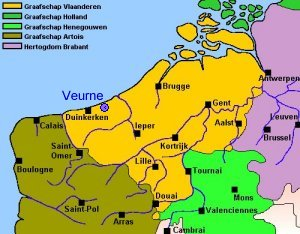
Veurne-Ambacht maakte aanvankelijk deel uit van de kasselrij van Sint-Omaars (Omer) maar werd een vijftigtal jaar later, in de late 11de eeuw, verheven tot zelfstandige kasselrij Veurne, om zo een betere controle te kunnen uitoefenen over de streek. De kasselrij Veurne vormde geen gesloten administratief en bestuurlijk geheel. De drie steden Lo, Nieuwpoort en Veurne zelf behoorden niet tot de kasselrij. In 1586 werd het stadbestuur van Veurne verenigd met dat van het gelijknamige burggraafschap. Nieuwpoort en Lo bleven zelfstandige steden.
Veurne-Ambacht is de naam van de streek en het grondgebied (de Kasselrij Veurne was de historische overheids- en bestuursvorm die (deels) over dat gebied heerste). Het grondgebied van Veurne-Ambacht bestond uit vier lagen:
1. De Keure van Veurne-Ambacht (De 42 parochies): De absolute kern. Zij hingen op élk vlak (bestuurlijk en juridisch) rechtstreeks af van de kasselrijmagistraat.
2. De "Acht Parochies" (of de Acht Prochiën): Dit was een groep van acht parochies (waaronder Vlamertinge, Reningelst en Watou) die geografisch veel zuidelijker lagen, richting Ieper en Poperinge. Zij vormden een aparte verzamelnaam. Ze hadden een soort autonome status: ze hoefden de wetten van de kasselrij niet blindelings te volgen, maar moesten wél meebetalen aan de algemene belastingen en militaire lasten van de kasselrij.
3. De enclave-heerlijkheden: Een tiental onafhankelijke adellijke lappendeken-gebiedjes (zoals Nieuwkapelle of Elsendamme) die binnen de regio lagen, maar eigen heren hadden. Ook zij moesten financieel bijdragen.
4. De drie steden: Veurne, Lo en Nieuwpoort.
Sommige parochies vormden met een naburige parochie, waaruit ze ontstaan waren, een ammanie. Daardoor telde de kasselrij maar 38 ammanieën. Deze werden verdeeld over twee vierscharen:
De Noordvierschaar omvatte de parochies van:
De Zuidvierschaar strekte zich uit over:
Daarnaast lagen er binnen Veurne-Ambacht een aantal heerlijkheden verspreid die geen deel uitmaakten van de kasselrij.
Deze acht parochies Elverdinge, Loker, Noordschote, Reningelst, Vlamertinge, Watou, Woesten en Zuidschote, werden in 1759 samengebracht onder een aparte entiteit, de Generaliteit der acht verenigde parochies en takken. Tot dan waren het semi-zelfstandige parochies die vooral fiscaal en militair aan de kasselrij Veurne moesten bijdragen.
De kasselrij Veurne vormde geen gesloten administratief en bestuurlijk geheel. De drie steden Lo, Nieuwpoort en Veurne zelf behoorden niet tot de kasselrij. Vooraleer de schepenbanken van de stad en de kasselrij in de 16de eeuw toenadering zochten en ook vonden, zetelden ze elk in een eigen gebouw. De schepenbank van de kasselrij in zijn landhuis aan de markt, de schepenbank van de stad vanaf omstreeks 1445 op de hoek van de Noordstraat en de Ooststraat ("Spaans Paviljoen" genaamd omdat later Spaanse militairen er een tijdlang logies vonden).
In 1586 werd het stadbestuur van Veurne verenigd met dat van de gelijknamige kasselrij. Nieuwpoort en Lo bleven zelfstandige steden. De kasselrij Veurne bleef als gerechtelijke en bestuurlijke entiteit bestaan tot de inlijving van Vlaanderen bij Frankrijk, in 1795.
Nog een aanwijzing waarom de
geschiedenis van Veurne-ambacht apart is en helemaal anders is dan bijvoorbeeld de
geschiedenis van Gent, Antwerpen, Brussel en zelfs van de huidige West-Vlaamse steden en gemeenten
zoals Brugge of Oostende.
Gedurende 242 jaar maakte de kasselrij Veurne deel uit van het bisdom Ieper. Samen met
Bergues, Cassel en al die gemeenten in het huidige Frans-Vlaanderen. De invloed van de
Kerk was toen zeer groot. Te begrijpen dat de verbondenheid met die huidige Frans-Vlaamse
gemeenten groter was dan met gemeenten uit het bisdom Brugge of bisdom Doornik
bijvoorbeeld.
Het bisdom Ieper werd op 12 mei 1559 een zelfstandig diocees en had zijn zetel in de Sint-Maartenskathedraal
in Ieper.
in Juni 2015 kwamen de portretten van de 18 bisschoppen terug
naar Ieper.
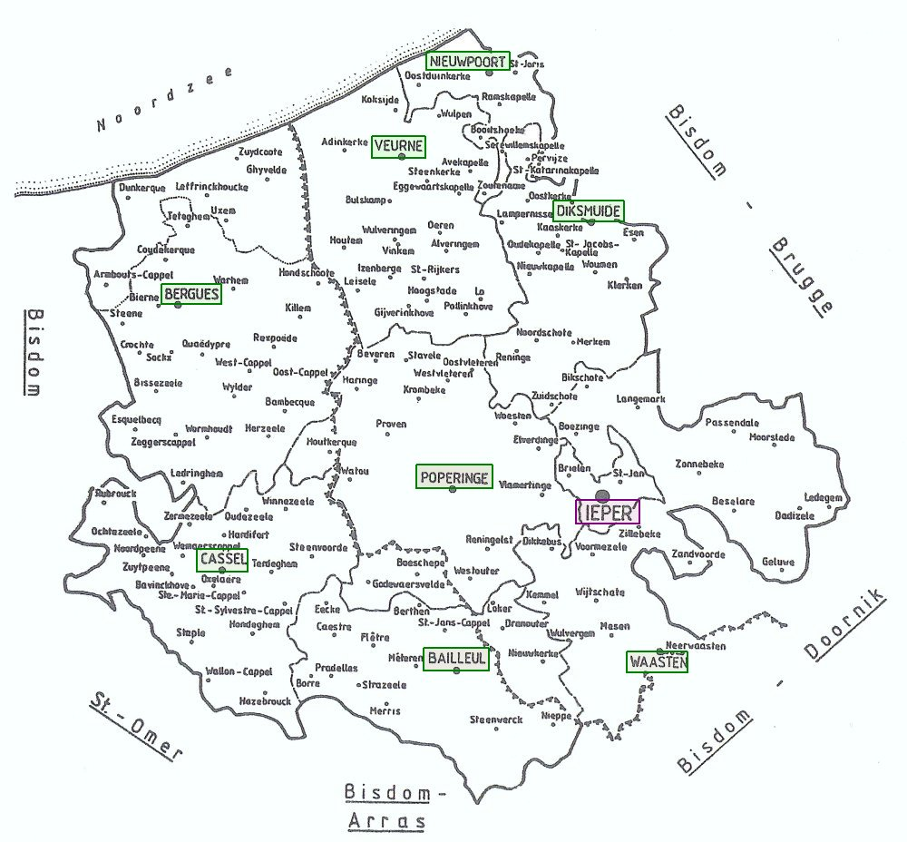
N.B. - In het boek
"De
bisschoppen van Ieper" staat er een foto
van de prachtige bisschopszetel die in 1957 onder (zachte ?) dwang in bruikleen werd
gegeven door de Ieperse kerkraad en kanunnik Verhaeghe, aan de toenmalige bisschop van
Brugge en die nu in de Brugse Sint-Salvatorskathedraal staat opgesteld.
De beschrijving van het curriculum vitae van die bisschoppen is zeer interessant en
bewijst nogmaals welk slavenvolk de bevolking van de Westhoek was. Veel van die
bisschoppen spraken de taal van de streek niet, waren totaal volksvreemd en/of benoemd
wegens hun blauw adellijk bloed - enzovoort.
1200 - 1500 : Veertiende en Vijftiende eeuw
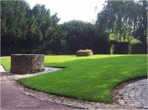
Vanaf tiende eeuw: vluchtburg (vluchtburcht) - burchtwal - motteheuvel. Resten zichtbaar in het huidig stadspark van Veurne (motte - waterput).In 1234 : vermelding van een Lakenhalle
In 1269 : eerste Vleeshuis aan de noordzijde van het marktplein
1302 : Guldensporenslag - De Coninck verlost
1302: Hospitaalridders (namen de gebouwen in van de afgeschafte Tempeliersorde - locatie huidig Atheneum). De Lollaarden (cellenbroeders, Alexianen) in de Sint-Denijsparochie en hun kloostertje op het huidige Sint-Denijsplein
1328 : Nikolaas Zannekin - boerenopstand in de Vlaamse kuststreek
1337 - 1453 : honderdjarige oorlog (Frans-Engels conflict)
Vier Bourgondische hertogen en één hertogin tussen 1384 en 1482
Ontstaan van Veurne: vluchtburg, motte, omwalling (eerste, tweede en derde omwalling)
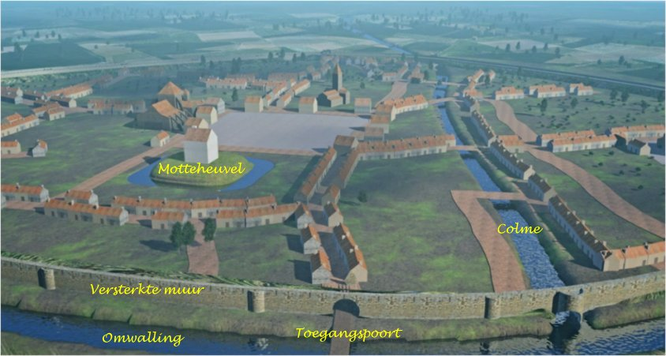
De rivier Colme (Kolme - Bergenvaart - Calomme) vloeit door Veurne als open waterloop en verbindt Veurne met de streek van Sint-Omaars en de rivier AA (de rivier AA was de grens met Frankrijk van het toenmalige Graafschap Vlaanderen). Westhoek die in 1713 werd gesplitst enerzijds naar Frans-Vlaanderen en anderzijds naar West-Vlaanderen.
Rond de Colme in Veurne (huidige: Oude Beestenmarkt, Fruitmarkt, Sint-Niklaaskerk): pottenbakkers, ambachtslieden, marcten.
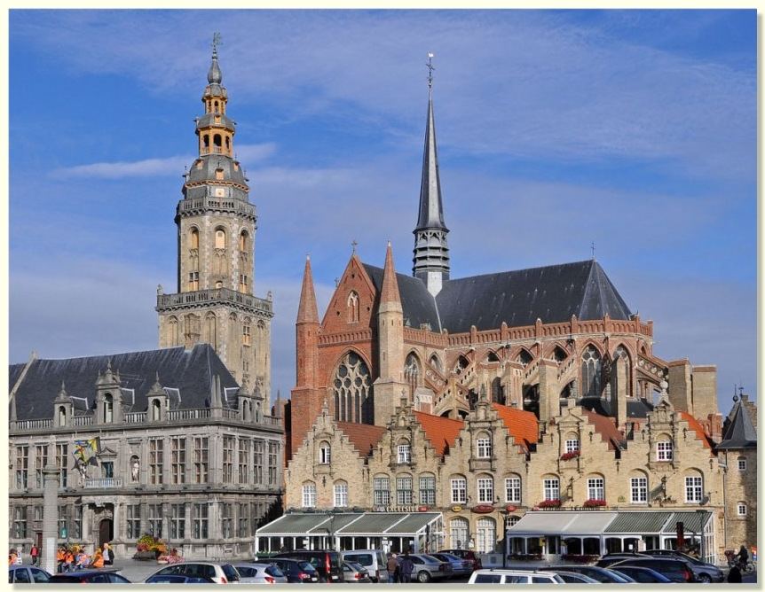
Seculier Kapittel van Sint-Walburga: organisatie dagelijkse koordienst, prebenden innen, voelden zich hoogverheven boven het volk. Startte begin 12de eeuw ook met het verstrekken van onderwijs aan de jongens.
Sint-Walburgakerk: rond
1250 wordt het gotisch koor gebouwd. De gebruikte baksteen heeft een opvallende lichtgele kleur (zeeklei). In 1353 werd het pas afgewerkte koor door een hevige brand geteisterd. Er werd toch gestart met een westtoren maar bleef steken bij een torenaanzet. Dit kerkcomplex bestond dus uit een romaans kerkschip, een hoger vroeggotisch koor en de niet-afgewerkte torenaanzet. In de jaren 1901 - 1904 werd een neogotisch deel toegevoegd.Regulier Kapittel van
Sint-Niklaas --> Sint-Niklaasabdij
Sint-Niklaaskerk: tussen
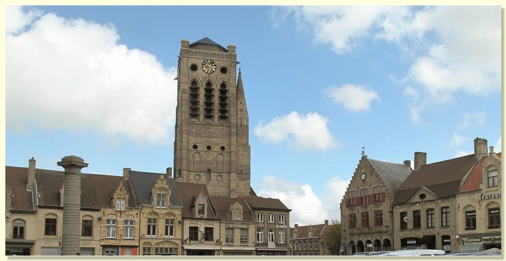
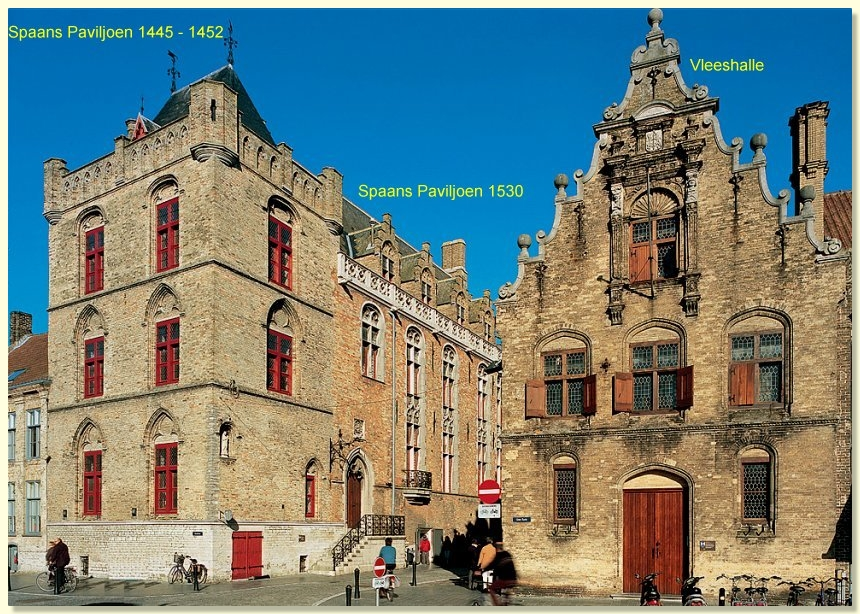
Onder Spaans Habsburgs bewind (1492 – 1576)
Openbare infrastructuur in Veurne tijdens de zestiende eeuw:
In 1492 keerde de rust in Veurne-Ambacht terug na het beëindigen van de opstand tegen Maximiliaan van Oostenrijk met als gevolg dat er een kalme periode aanbrak.
Lakenindustrie:
1488 lakenindustrie van Hondschote naar Veurne (na dood Karel De Stoute koos Veurne de kant van Maria van Bourgondië en Maximiliaan van Oostenrijk). In 1511 zware brand in de rumoerige rosse buurt (huidige Oude Beestenmarkt) van volders, wevers, wassers en kammers.De Veurnse rederijkers: in 1530 fusie tussen de beide kamers (de kamers van Rhetorica en Rederijkerskamer). Ontstaan van het begrip "Veurnse slaepers".
Tijdens de regeerperiode van Karel V (1500 - 1519 - 1556) waren er geen gevolgen te merken van zijn oorlogen tegen Frankrijk.
Pas onder Filips II (1527 - 1556 - 1598) ondervond de Kasselrij Veurne nadelige gevolgen van de oorlog tegen Frankrijk (Frans-Spaanse oorlog 1547 – 1559).
De tweede helft van de 16de eeuw was een tijd van godsdienstoorlogen. Ook de tijd van de vervolging van de heksen en ketters door de katholieke kerk (vooral tijdens het bewind van de katholieke aartshertogen). Het hoogtepunt hiervan viel tussen 1580 en 1630. Veurne heeft de reputatie in heel Vlaanderen de stad te zijn waar het grootste aantal heksen op het marktplein openbaar werd verbrand.
Vanaf juli 1558 begonnen Franse soldaten vanuit de naburige Kasselrij Sint-Winoksbergen, de parochies
langs de Noordzeekust te plunderen. Het bekwam Jan Reingoot slecht dat toen hij samen met
een groep Adinkerkenaars protesteerde vóór het landhuis en de schepenen van de Kasselrij
de schuld gaf dat de Franse soldaten een strooptocht hadden gehouden.
Nadien vielen alle parochies ten Westen van de Lovaart ten prooi aan het oorlogsgeweld.
Met de overwinning van Egmont op 13 juli 1558 (slag bij Grevelingen) keerde de rust terug.
Op 10 augustus 1566 brak de Beeldenstorm uit in het naburige Steenvoorde. De opstandelingen (geuzen, calvinisten, beeldenstormers) vernielden kerken, kloosters, kapellen en de bezittingen van de geestelijkheid. Op 16 augustus 1566 kreeg de Sint-Niklaasabdij, die buiten de stadsmuur lag, het hard te verduren tijdens de aanval van de beeldenstormers. Hun poging om op 8 oktober 1566 Veurne in te nemen mislukte.
Weldra keerde de rust over Veurne-Ambacht terug. Maar de komst van de Hertog van Alva luidde een periode in van vervolgingen, uitgevoerd door de Raad van Beroerten. Onmiddellijk effect daarvan was dat er tussen 1566 en 1568 minstens 138 personen veroordeeld werden, terwijl daarenboven meer dan 400 gezinnen de Kasselrij verlieten. Alva’s optreden had tot gevolg dat de geuzerij moest onderduiken. Veel geuzen vluchtten ook overzee.
Verder bleef het rustig tot 20 april 1573. Dan vielen watergeuzen Koksijde binnen. Nog in 1573 ondervond de bevolking de nadelen van muitende Spaanse troepen en voorbijtrekkende vreemde legers.
In 1578 waren het weer geuzen, die de abdijgebouwen in Veurne afbraken. Met de steun van het calvinistisch bestuur van Gent werd ook in Veurne een calvinistisch gezind Comité van XVIII opgericht dat alle katholieken uit de bestuursorganen wou weren en de katholieke eredienst gedurende enkele jaren verbood. Na herovering van Veurne op 27 juli 1583 door Farnese kregen de katholieken hun rechten terug en werden de calvinisten het opgejaagde wild.
Onder Willem van Oranje (1576 – 1583)
De Tachtigjarige Oorlog, is de naam voor een opstand en strijd in de Nederlanden (
1568 - 1648, met een Twaalfjarig Bestand in de jaren 1609 - 1621). De Vrede van Münster was het verdrag dat op 15 mei 1648 werd gesloten werd tussen Spanje en de Republiek der Zeven Verenigde Nederlanden, waarmee aan de Tachtigjarige Oorlog tussen Spanje en de opstandelingen in de Republiek een einde kwam en de Republiek als soevereine staat erkend werd: onafhankelijkheid van Nederland.De
Pacificatie van Gent is een op 8 november 1576 gesloten overeenkomst tussen de 17 gewesten van de Nederlanden om zich aaneen te sluiten in een zogeheten Generale Unie. Dit politieke succes van Willem van Oranje was mogelijk dankzij de Spaanse Furie, de plundering op 4 november 1576 van Antwerpen door Spaanse soldaten die hun achterstallige soldij wilden aanvullen. Hierdoor was onder alle gezindten in de Lage Landen een sterk anti-Spaanse stemming ontstaan.Door de ondertekening van de Pacificatie van Gent werd de hoop gewekt
tot verbetering van de toestand, maar als gevolg van het conflict tussen de Habsburgse
landvoogd Don Juan (Filips II stuurde Don Juan in 1576 als landvoogd naar de Nederlanden
om de overleden de Requesens te vervangen) en de Staten-Generaal, bleek dit ijdel te zijn.
Don Juan werd op 8 december 1576 door de Staten-Generaal afgezet en vervangen door
aartshertog Mathias van Oostenrijk.
De Pacificatie van Gent leek het grote ideaal van Willem van Oranje, met name eenheid van de 17 gewesten van de Lage Landen op basis van godsdienstvrijheid, binnen handbereik te brengen. Al snel bleek dit ideaal niet haalbaar. Drie jaar later vielen de zuidelijke en noordelijke Nederlanden uiteen in respectievelijk de Unie van Atrecht en de Unie van Utrecht (Nadere Unie).
6 januari 1579 (Unie van Atrecht) verzoenden de Malcontenten zich met Filips II waardoor de scheiding der Nederlanden een voldongen feit werd. Henegouwen, Artesië en Rijsels-Vlaanderen wilden onder de heerschappij van Filips II blijven en handhaving van de katholieke godsdienst, maar eisten het vertrek van de Spaanse en Italiaanse soldaten die als bezettingsmacht werden ervaren. Farnese ging akkoord en trok de troepen in april 1580 terug. Zodoende sloten de drie Waalse gewesten (Artesië, Henegouwen en Frans-Vlaanderen) vrede met de koning, los van de andere (merendeels protestantse) opstandige gebieden.De
Unie van Utrecht is een op 23 januari 1579 getekende overeenkomst tussen een aantal Nederlandse gewesten, waarin werd overeengekomen dat men zich gezamenlijk zou inzetten om de Spanjaarden het land uit te jagen en waarin daarnaast een aantal staatkundige zaken werden geregeld op het gebied van bijvoorbeeld defensie, belastingen en godsdienst, zodat het ook wel kan worden gezien als een eerste versie van een latere grondwet.De oorspronkelijke gewesten die de overeenkomst ondertekenden waren Gelre en Zutphen, Holland, Zeeland, Utrecht en de Groningse Ommelanden. Later sloten ook Gent, Nijmegen, Arnhem, Friesland, Venlo, Amersfoort, Ieper, Antwerpen, Breda, Brugge en het Brugse Vrije, Lier en Drenthe zich aan. De Brabantse steden 's-Hertogenbosch en Leuven sloten zich NIET aan bij de Unie van Utrecht, omdat ze in Spaanse handen waren.
Met als resultaat dat de Kasselrij Veurne, die juist op de grens lag tussen de Nederlandse gewesten en de Spaans gezinde Malcontenten, zwaar te lijden had onder de brandschattingen van de zogenaamde Malcontenten.
De jaren 1579 tot 1583 kenmerkten zich door honger, besmettelijke ziektes, plunderingen enz. Het leidde tot bevolkingssterfte, ontvolking en uitzonderlijke duurte van de levensmiddelen.
Alexander Farnese en zijn groot heroveringoffensief (1583 – 1604 – 1645)
Spaanse koningen:
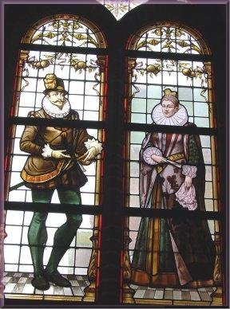
De pest bleef nog aanhouden tot 1585. Tot 1587 bleef de toestand nog uiterst kritiek want door de geringe landbouwopbrengsten was het voedsel schaars en duur, met hongersnood als gevolg.
Tegen het einde van de 16de eeuw begon de toestand te verbeteren voor de stedelingen van Veurne, die - dank zij het ommuurde Veurne - aan de strooptochten van de plunderende legers konden weerstaan.
De toestand op het platteland rond Veurne kreeg nog heel wat oorlogsellende te verwerven (onder andere bv. de slag bij Nieuwpoort in 1600). Deze moeilijke periode eindigde op 20 september 1604 met de overgave van Oostende.
Dit werd nogmaals op 9 april 1609 bevestigd met de ondertekening van het Twaalfjarig Bestand. Het Twaalfjarig Bestand of Treves was een periode van twaalf jaar van wapenstilstand gedurende de Tachtigjarige Oorlog waarin niet of nauwelijks door de opstandelingen in de Republiek en de Spanjaarden werd gevochten. Het bestand duurde van 1609 tot 1621. De tijdsspanne van het Bestand zorgde dat de Kasselrij Veurne dan “soo weeldich lant was als er ergens te vinden was”.
De jaren
1604 tot 1640 waren voor Veurne-Ambacht een vredige periode in de letterlijke betekenis van het woord.Openbare infrastructuur in Veurne tijdens de zeventiende eeuw:
1603 - 1616: derde vestiging van de Sint-Niklaasabdij
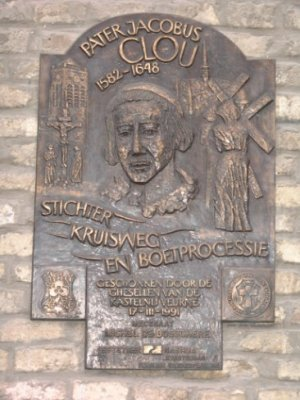
1636 : De Hoge Wacht is een gebouw in Renaissancestijl, in 1636 opgetrokken als herberg. Later werd het gekocht door de stadsmagistraat en als wachthuis ingericht. Ligging op de hoek van de Markt en de Appelmarkt.1637: stichting van de boetprocessie van Veurne. Film van 38 minuten >>>
1619 - 1627 : drooglegging van de Grote Moere. Moerasgebied zich uitstrekkend in de toenmalige Westhoek XL, van Veurne over Adinkerke, Uxem tot Sint-Winoksbergen en Duinkerke.
1586 - 1612 - 1628 : Kasselrijbestuur - Stadsbestuur Veurne
In Veurne was er oorspronkelijk een apart stadsbestuur, dat geen deel uitmaakte van de kasselrij.
Een stadhuis was/is het huis van en voor de bewoners van een stad.
Van
De samenwerking tussen het bestuur van stad Veurne en het kasselrijbestuur Veurne-Ambacht gaf meer dan eens aanleiding tot conflicten. De vertegenwoordigers van de kasselrij verweten de stedelingen herhaaldelijk hun grote inhaligheid (seer boetsuhctich).
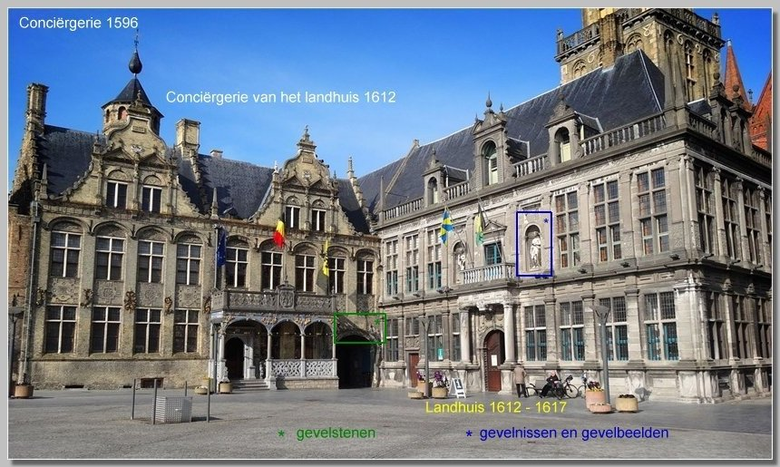
Spanjaarden en Fransen (1604 tot 1640/sp - 1646/fr - 1652/sp – 1659/fr - 1659/sp - 1668 tot 1713/fr)
De jaren 1604 tot 1640 waren voor Veurne-Ambacht een vredige periode in de letterlijke betekenis van het woord. In 1643 kwam Louis 14 in Frankrijk aan de macht. Door een drie-stedenakkoord
(1643) werd het waterverkeersnet uitgebreid. Vanaf 1644 werd de Westhoek stilaan het strijdtoneel tussen Spanje en Frankrijk. De Vrede van Münster was een verdrag dat op 15 mei 1648 werd gesloten werd tussen Spanje en de Republiek der Zeven Verenigde Nederlanden, waarmee aan de Tachtigjarige Oorlog tussen Spanje en de opstandelingen in de Republiek een einde kwam en de Republiek als soevereine staat erkend werd: onafhankelijkheid van Nederland.1638: de Spanjaarden slaan de aanval van de Fransen op Saint-Omer af.
1644: aanval van de Fransen op Grevelingen
Op 5
september 1646 viel Veurne in de handen
van de Fransen en werd de Kasselrij bezet.
Van 1646 tot 1647 zou er één derde van de inwoners van de Kasselrij
zijn overleden aan “den rooden ende grauwen buyckloop”.
Ook in Veurne-stad hadden pest en dysenterie een viertal jaren na elkaar
(1645-1648) een abnormale sterfte veroorzaakt.
Tot begin september 1651 bleef Veurne in handen van de Fransen. Gedurende deze tijd werd Veurne-Ambacht geplunderd door zowel vijandelijke als bevriende troepen.
Pas een jaar later, in september 1652, slaagden Spaanse troepen erin de Fransen uit Vlaanderen te verdrijven. Maar de oorlog bleef aanhouden want op 6 augustus 1658 werd Veurne door Lodewijk XIV heroverd, dit in navolging van Duinkerke (7 juli) en Sint-Winoksbergen (15 juli).
Van Duinkerke tot Nieuwpoort, van Nieuwpoort tot Diksmuide en van Diksmuide tot de Fintele werd het gewest beroofd door huursoldaten in zowel Franse als Spaanse dienst. Bovendien waren veel landbouwers met hun vee gevlucht naar veiliger oorden of op de landen die onder het gebied waren van de Vereenichde Staten (= Verenigde Provinciën) waer sij in verseckeringe leefden.
Frankrijk en Spanje sloten op
7 november 1659 de vrede van de Pyreneeën tussen Lodewijk XIV van Frankrijk en Filip IV van Spanje op Fazanteneiland. Met de Vrede van de Pyreneeën kwam op 7 november 1659 een einde aan de Spaans-Franse conflicten die voortvloeiden uit de Dertigjarige Oorlog. In ruil voor vrede zag de Spaanse koning Filips IV af van zijn rechten op de landen en steden aangesloten bij de Unie van Atrecht: Artesië, de graafschappen Bonen en Henegouwen en delen van Vlaanderen (onder andere Duinkerke); verder delen van Luxemburg en Lotharingen en diverse heerlijkheden in de Languedoc.Na ongeveer zeven jaar kwam er een einde aan deze ‘eeuwigdurende’ vrede. In 1667 wou Lodewijk XIV namelijk zijn rechten op de Spaanse Nederlanden laten gelden. Eens te meer werd Veurne door de Fransen bezet.
Onder Frans bewind met een onvoltooide vesting (1668 - 1688 – 1714)
Door de vrede van Aken werd de kasselrij Veurne Ambacht voor 45 jaar - meer bepaald van
1668 tot 1713 - ingelijfd bij het koninkrijk Frankrijk (of volgens andere historici: "aan een Franse bezetting onderworpen")De positie als grensstad was weinig begerenswaardig. Veurne verloor zijn middeleeuwse versterkingen en was op deze wijze een open stad midden de oorlogszone.
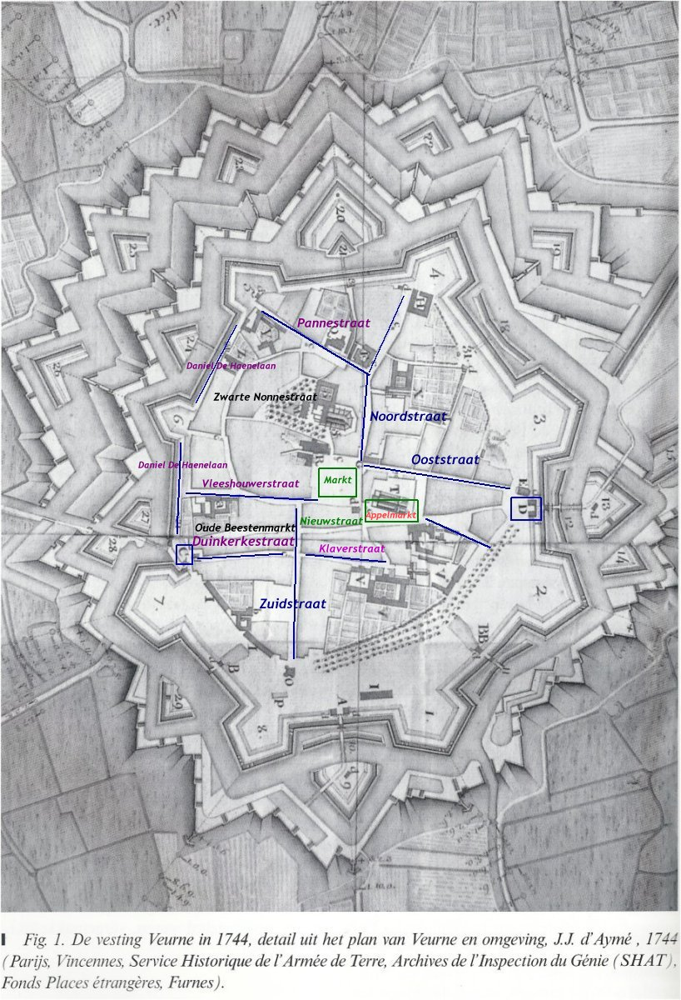
Dit zou het aspect van de stad voor de volgende eeuw bepalen. De stad kreeg een moderne vestinggordel waar ruim 15 jaar aan gewerkt en aangepast werd. Met deze ingreep bevestigden de Fransen dat het menens was met de integratie. De westkust was strategisch van uitzonderlijk belang alleen al omwille van de nabijheid van de havenstad Duinkerke, de meest noordelijke haven van het koninkrijk. De regio kreeg dan ook de nodige aandacht van de vestingbouwer Vauban, wat zich uitte in een bijkomende beschermingen in de vorm van inundaties, linies en versterkte legerkampen.
De werken voor de vesting Veurne startten begin 1693 na de ontzetting van de stad Veurne door de Franse troepen. Onder de leiding van Vaubans hoofdingenieur Mesgrigny, startten de ingenieurs Duverger en Hue de Caligny met de uitbouw van wat reeds de derde gebastioneerde vestinggordel rond Veurne was.
De oplossing bestond erin om een tweede gordel van ravelijnen en een gedekte weg aan te leggen. Alras bleek dat dit echter niet voldeed. Vanaf 1699 startte Vauban met de hulp van ingenieur Touros met een reeks ontwerpen voor een grondige aanpassing. De bedoeling was een nieuwe meer vooruitgeschoven vestinggordel aan te leggen ongeveer 125 m voor de oude courtine. Dit geheel was uitgerust met ruime bastions (in oppervlakte ongeveer het dubbele van de oude...). De nieuwe vestinggordel reikte op deze wijze 350 m diep, waardoor het eigenlijke stadsareaal volledig beschermd was tegen het rechtstreekse vijandige mortier- en kanonvuur.
De vestinggordel werd aangezet en was zeker nog in 1710 in constructie.
Het geheel bleef onvoltooid: van de acht bastions slaagde men erin vijf bastions volledig te vernieuwen.
De reeks omgevingsplannen van de vesting Veurne laten de bijkomende versterkingswerken zien: de verdediging van de vesting was aangevuld met een versterkt legerkamp richting Duinkerke en een reeks linies langsheen de Lovaart en de Bulskampvaart.
Langsheen het Langeleed ten noorden van de stad was een reeks redoutes voorzien. Al deze constructies. waren in een korte periode van 1694 tot 1695 opgeworpen.
Veurne was begin 18de eeuw een veilige stad, geïntegreerd in het Franse koninkrijk in een nauwe band met de havenstad Duinkerke. Dit alles uitte zich onder meer in de stijging van de pachtwaarden tussen 1689 en 1701. Geen wonder dat ook de Fransen belangstelling toonden voor de Veurnse vastgoedmarkt.
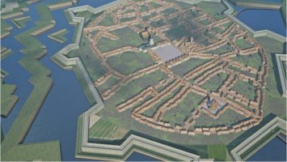
Dit alles werpt zijn vruchten af tijdens het laatste grote conflict van de Spaanse Successieoorlog (1702-1713/14). De Grote Alliantie waagde het niet de kuststeden aan te vallen. Bovendien bleef de regio dankzij de linies, grotendeels gespaard van vijandige roof en brandschattingen.De regio rond Veurne had de laatste fase van de oorlogen goed doorstaan, beschermd als ze was door een stelsel van linies en fortjes.
In de niet beschermde regio ten oosten van de linie was de schade van de oorlogen en meer bepaald van de inundaties, enorm. Vooral de regio rond Nieuwpoort en bezijden de IJzerrivier had hier sterk onder te lijden. Nagenoeg alle bedrijven waren hier gedeeltelijk vernield of verlaten.
Maar ook in de overige gebieden van de kasselrij Veurne had een decennialange oorlogstoestand zijn sporen nagelaten te oordelen naar het hoog aantal vervallen hofsteden.
Oostenrijkse Habsburgers (1713 – 1744 - 1748 - 1794)
Voor Lodewijk XIV waren de jaren 1710–1713 waarschijnlijk de somberste van zijn hele lange regering. Frankrijk was uitgeput door de dure en steeds minder succesvolle Spaanse Successieoorlog; hongersnood en zware winters hadden de bevolking verarmd; de koning zelf was oud en vaak ziek. Nog zwaarder wogen de familiale rampen: in 1711 stierf zijn zoon, de Grand Dauphin; in 1712 overleden kort na elkaar zijn kleinzoon, Lodewijk van Bourgondië, diens vrouw en een achterkleinzoon. Plots bleef enkel de jonge toekomstige Lodewijk XV als erfgenaam over.
De Vrede van Utrecht betekende geen totale nederlaag voor Frankrijk, maar wel een duidelijke terugtocht van de ambities van de Zonnekoning: hij moest verschillende veroveringen opgeven en erkennen dat zijn kleinzoon wel koning van Spanje mocht zijn, maar nooit beide kronen kon verenigen.
Voor Vlaanderen was de vrede eveneens een keerpunt: het zuidelijke deel van de Nederlanden kwam onder Oostenrijks gezag, terwijl gebieden die eerder tot het historische Vlaanderen behoorden — het huidige Frans-Vlaanderen rond Rijsel, Duinkerke en Kassel — definitief Frans bleven.
Zo zag zowel Lodewijk XIV als Vlaanderen tussen 1710 en 1713 een tijdperk eindigen waarin hun politieke en territoriale ambities sterk werden teruggeschroefd.
De vrede van Utrecht : is de verzamelnaam voor een reeks van verdragen waarvan het eerste op 11 april 1713 in Utrecht werd gesloten en waardoor onder andere een einde kwam aan de Spaanse successieoorlog en waarbij de Verenigde Provinciën (de republiek - het huidige Nederland) het overwicht op de zee en steden in de Zuidelijke Nederlanden verloren maar mochten wel garnizoenen in de Barrièresteden behouden.
Het pré-barrièretractaat van
30 januari 1713 tussen Frankrijk en de Republiek hertekende de grens tussen Frankrijk en de Zuidelijke Nederlanden: in feite legde men de nieuwe grens als het ware tussen de twee lijnen van de Pré-Carré. 15 november 1715): de Republiek en Oostenrijk tekenen te Antwerpen de voorwaarden waaronder de Republiek het recht krijgt soldaten te legeren in acht steden in de Oostenrijkse Nederlanden. Zo betaalt de Oostenrijkse keizer het onderhoud van de Staatse garnizoenen (jaarlijks 1.125.000 gulden). Zij worden dus in feite een huurleger in de Zuidelijke Nederlanden die militair gezien in zekere zin een condominium tussen de keizer en de Republiek vormen.Oostenrijkse Habsburgse keizers:
De Zuidelijke Nederlanden (= de Oostenrijkse Nederlanden) werden dus geen soevereine staat maar evolueerden tot een bufferstaat, die deel uitmaakte van het Oostenrijkse Habsburgse Rijk. De Zuidelijke Nederlanden (na het barrièreverdrag van 1715) werden bestuurd door gouverneurs-generaal:
In deze nieuwe constellatie bleef Veurne een grensstad, die dan wel werd omgewerkt tot een barrièrevesting ditmaal tegen Frankrijk.
Dit alles bracht stad en regio in een eerder tweeslachtige situatie:
* Economisch bleef de regio grotendeels
gericht op het koninkrijk.
* Militair vormde het een tegenvesting van de steden Duinkerke en
Sint-Winoksbergen.
* Bovendien werd de stad bemand met Staatse troepen uit de Republiek van de Verenigde
Provinciën.
Bezettingsmacht en de vesting Veurne
Krachtens het Traktaat van Barrière, afgesloten in Antwerpen op 17 november 1715 en geratificeerd op 31 januari 1716 kregen Oostenrijk en de Republiek een exclusief garnizoensrecht met een totale bezetting van 35.000 man. Deze werden verdeeld onder 3/5 voor Oostenrijk en 2/5 voor de Republiek.
In de stad Veurne werden 650 fantassins of infanteriesoldaten uit de Republiek gestationeerd. Met een totale stadsbevolking van om en bij de 2.000 inwoners had dit tot gevolg dat in deze toch lange periode een vierde van de stadspopulatie uit soldaten en hun gevolg bestond. Dit alles veronderstelde heel wat aanpassingen aan beide zijden. Dat de bezettingstroepen bovendien protestants hervormingsgezind waren, vergemakkelijkte de zaak niet.
De linies en de redoutes rond de stad waren geen lang leven beschoren en dienden in voorbereiding van het Barrièretractaat systematisch geslecht. Hierop werd nauwlettend toegezien.
De kostenverdeling voor deze werken vormde een bron van discussie.
De stad en kasselrij dienden op te draaien voor de kosten van de sloop van linies en redoutes, in de redenering dat deze werken juist hun gronden hadden beschermd tegen de brandschatting.
Het versterkte legerkamp en de linies bij de Bulskampvaart viel niet onder deze afbraak. Hier haalden stad en kasselrij het argument aan dat deze constructie deel uitmaakte van de versterking van Veurne en dit werd blijkbaar beaamd.
De verkoop van de onderdelen en de aanbestedingen voor de afbraak grepen plaats op 6 en 7 november 1713. De sloopwerken omvatten specifiek : ‘l'applantissement et comblement des fossés et enveloppes des terres qui entourent les redoutes à machicoulis, comme aussi l'applanissement du retranchement le long du canal de Loo depuis de la ville de Furnes jusques au pont de l'hospital ainsi qu'il s'ensuit'
De prijzen voor de afbraak bleken sowieso te laag. De sloop van de redoutes werd stilgelegd en de aannemers lieten het werk onvoltooid achter. De heraanbesteding volgde op 21 maart 1714.
De vesting Veurne onderging uiteindelijk weinig aanpassingen.
De belangrijkste ingrepen betroffen de infrastructuur.
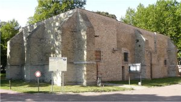
Op 28 mei 1718 richtte het stadsmagistraat een schrijven aan de Staten-Generaal (van de
Oostenrijkse bezetter) met de vraag om het buskruit te kunnen overbrengen in één van de
kazematten boven de waterpoort tussen de Nieuwpoortse en Ieperse poort (op het eind van de
huidige Kaai). De stad nam de transport en aanpassingswerken op zich. Het positieve
antwoord volgde reeds op 22 juni 1718. Op 25 februari 1719 besloot het magistraat na
overleg met ingenieur de Rets dit werk voor 800 pond te laten uitvoeren. De oude
torenaanzet werd vervolgens tot een wateropslagplaats omgewerkt.
Dit was niet het enige kruitmagazijn. In 1744 vermeldt ingenieur J.J. d' Amyé het buskruitmagazijn in de verbouwde Oude Oostpoort. Ook de Oude Ieperpoort werd tot magazijn omgewerkt.
De vestinggordel zelf kende slechts kleine aanpassingen: in 1726 herstelt men de gedekte weg in de sector tussen de lunet van Duinkerke en het Wester ravelijn. In 1729 werd bij de onderhoudsbeurt het binnenste parapet van de kapitale wal met graszoden hersteld, 1200 bomen aangeplant bovenop de parapet van de hoofdwal en de kapitale gracht vanaf de Nieuwpoortse poort tot aan de Duinkerkse poort gereinigd. In 1732 volgde dan de rest van de grachten. Voor de volgende jaren plande men de aanleg van een gedekte weg tussen de Ieperpoort en het hoornwerk.
De ingrepen in verband met het herstel, onderhoud en beheer van de vesten dienden door de Staatse troepen uitgevoerd. Zij konden zelf, indien nodig, aanpassingen en aanvullingen aan de vesting uitvoeren. Ook dit leidde tot allerlei wrijvingen: zo verplichte de gouverneur in de winter van 1734 het magistraat om werkkrachten te leveren om het ijs van de hoofdgracht te breken. Moeilijkheden doken ook op bij het herstel van het glacis. Hierbij recupereerde men blokzoden vanuit de omringende weilanden, waardoor de landbouwwaarde van dit weiland aanzienlijk daalde. Tevens was het verboden vee op het glacis te laten grazen, wat vooral tijdens de marktdagen problemen opleverde.
De troepen beschikten over twee kazernes. Beide waren gelegen in het zuiden van de stad, op het ruime voorplein ontstaan door het naar voor schuiven van de zuidelijke courtine. Deze ruimte deed meteen dienst als oefenplein. In 1742 liet de stad de resten van de middeleeuwse stadgracht dichtsmijten omwille van hygiënische redenen, waardoor het areaal tot een boomrijke boulevard kon evolueren.
De kazerne ten noordoosten van de Ieperpoort was nog door Fransen opgetrokken in 1700 - 1701. Deze kazerne wordt in 1746 omschreven als een gebouw met twee bouwlagen, waarin niet minder dan 756 soldaten konden worden ondergebracht. Dit volstond dus ruimschoots voor het Hollandse garnIzoen.
Het tweede kazernecomplex was opgebouwd uit twee vleugels gelegen ter hoogte van de huidige Peter Benoitlaan. Deze gebouwen werden vermoedelijk opgetrokken tussen 1733 en 1744, het jaar dat de stad door de Fransen terug werd ingenomen. De twee kazernes werden als het ware bezijden het Cellebroedersklooster opgebouwd en telden slechts één bouwlaag onder een zadeldak. In deze gebouwen konden in totaal 768 soldaten gelogeerd. Resten van deze kazernes, in de volksmond de Zuidkazerne genoemd, bleven bewaard tot het interbellum. Of ze ooit permanent gebruikt werden, is minder duidelijk.
De officieren waren gelogeerd in de diverse paviljoenen, zoals het paviljoen van de Duinen, gelegen op de hoek van de Noordstraat en de Vestingstraat en het huidige Spaans Paviljoen op de noordoosthoek van de markt . De gouverneur beschikte over een eigen woning. Deze was gelegen in de Zwarte Nonnenstraat omtrent de huisnummers 15 en 17.
Het garnizoen had zijn eigen watervoorraad die bestond uit een rechthoekige vijver gelegen op het glacis ten westen van het ravelijn van de Ieperpoort.
Dat het samenleven met deze bezettingsmacht niet steeds rimpelloos verliep, weten we door het rapport van M. de Keerle betreffende het gedrag van de gouverneurs en de troepen in de barrièresteden, in 1738 opgesteld in opdracht van de Koninklijke Commissarissen. Basis voor dit onderzoek vormde een rondvraag gericht aan de magistraten van de verschillende barrièresteden. Deze memorie levert ons een goede kijk op de diverse spanningen die de eerste decennia van deze bezetting met zich meebrachten voor het stadsbestuur en de bevolking.
De uitoefening van de godsdienst werd geregeld door het artikel IX van het traktaat en voorzag in het gebruik van een 'discrete' tempel voor de eredienst. Waar deze tempel was ondergebracht kunnen we via het kaartmateriaal achterhalen: het geheel lag in het arsenaal dat was ondergebracht in het oude stadshof van de Onze Lieve Vrouweabdij Ter Duinen (op de hoek van de huidige Pannestraat-Noordstraat) midden in de stad.
Meer ingrijpend was het feit dat niet alleen de soldaten, maar ook andere personen - in naam van de gouverneur - allerlei parallelle handeltjes in de kazernes organiseerden en zodoende de plaatselijke middenstand nadeel berokkenden.
En tenslotte was er de eigengereidheid van de bevelvoerende gouverneurs. Zo eiste de Gouverneur in 1728 het jachtrecht op, in een straal van één mijl rond de stad en zette die zelf te huur. Hier werd uiteindelijk een compromis gevonden. Voor de meeste van deze problemen werd trouwens een oplossing gevonden.
Maar ook de gouverneurs kwamen met hun eisen opzetten en vroegen - tevergeefs overigens - belastingvrijstelling op de brandewijn geschonken in de hospitalen.
De republiek van zijn kant wees op de gebrekkige hospitaalaccommodatie binnen de barrièresteden. Zieke soldaten werden op kosten van de steden en het landbestuur verzorgd en ondergebracht in het plaatselijke gasthuis of in gelegenheidshospitalen in één of ander huurhuis.
Voor Veurne stad werd hier pas in 1760 voldaan met de constructie van een eigen krijgsgasthuis op de huidige Houtmarkt.
Socio-economisch en Onderwijs
Het leven binnen de stad hernam. Eén van de eerste beslissingen van het magistraat was het verlengen van het contract omtrent de Latijnse School, waarvan het contract op 2 december 1713 door de Norbertijnerabdij was opgezegd. Ook dit was onrechtstreeks een gevolg van de voorbije oorlogstoestand.
Financiële problemen te wijten aan een aantal tegenslagen - brand in
de abdij en het uitvallen van de enkele uithoven ten gevolge van de inundaties - brachten
de abdij in moeilijkheden. Gelukkig voor de stad waren de Oratorianen uit Oostende bereid
de onderwijstaak op zich te nemen zowel van de Latijnse als de Vlaamse Schole. In het
contract van 2 januari 1714 verbond het magistraat er zich toe om "te doen
herstellen in goeden ende bequaemen staet, soo haast het selve doenelick sal wesen, ende
alle hetzelve jaerlycx te doe onderhouden vande nodighe refectien".
Reeds in 1716 trok men nieuwe schoollokalen op.
D. Dalle analyseerde de economische toestand in de l8de eeuw in de kasselrij en kwam tot de conclusie dat het economisch herstel slechts schoorvoetend intrad om pas in de tweede helft van de l8de eeuw ten volle door te breken.
Dit alles had diverse oorzaken. Er was ondermeer de kunstmatig laag gehouden Franse munt en de gewijzigde tolpolitiek, waardoor één van de hoofdinkomsten van de landbouwers, namelijk de productie en de uitvoer van kaas nagenoeg wegviel en deze van boter minder concurrentieel werd. De regio werd bovendien geplaagd door allerlei migratie bewegingen. Er was de uitwijking richting Frankrijk van de economisch sterkere groep en een inwijking van 'inclipte' lieden, waartegen nauwelijks enig kruid tegen gewassen is. De ordonnantie van 21 april 1721 poogde tevergeefs de 'wildbouw', die hiervan het gevolg was, tegen te gaan.
Desondanks nam de bevolking nauwelijks toe. Het regeringsrapport van 21 oktober 1755 : 'Ecrit d'observation sur les moyens propres à rétablir la population dans la châtellenie de Furnes' wijst hierop.
Er bleek een duidelijke tendens naar ontvolking en de creatie van grootbedrijven. Vooral de kleine landbouwer had het inderdaad moeilijk en dat alles ten voordele van de meer kapitaalkrachtige landbouwers en instellingen zoals abdijen en kloosters. Hun bedrijven werden nagenoeg onmiddellijk na de Vrede hersteld en opnieuw operationeel gemaakt.
Maar er was meer aan de hand: het omringende poldergebied was niet bepaald een gezonde streek, geplaagd als ze werd door malaria of polderkoorts. De regio werd dan ook met een zeker behoedzaamheid ingenomen terwijl het veldwerk door seizoenarbeiders uit de aanpalende gebieden werd uitgevoerd. De belangrijkste broedhaard van de malariamug was het gebied van de droogmakerij van de Moeren, die vanaf 1645 terug onder water verdween. Pas eind I8de eeuw volgden een nieuwe geslaagde maar gedeeltelijke poging tot drooglegging.
De bouwactiviteit, één van de graadmeters van de conjunctuur, vormt een goede en nog zichtbare illustratie van deze langzame opwaartse trend. Aanvankelijk stond die op een laag pitje.
Pas tijdens de tweede helft van de l8de eeuw kwam er een kentering ten gunste wat zich niet alleen in de stad maar ook op het platteland uitte in een reeks opmerkelijke nieuwbouwprojecten en dit zowel in de particuliere als in de religieuze sector. Ze vormen nu nog altijd de hoofdmoot van het monumentenbestand van de regio
Openbare infrastructuur
De onafgewerkte torenaanzet van de Sint-Walburgakerk: wordt omstreeks 1700 gebruikt als buskruitopslagplaats. In 1715 werd het kruidmagazijn overgebracht naar de oostelijke stadsrand en werd de torenaanzet gebruikt als een wateropslagplaats of citerne (300 m³).
Monumentale gebouwen in classicistische stijl: het Sint-Jansgasthuis aan de Houtmarkt en het huis nu The Old House in de Zwarte Nonnenstraat en andere grote woningen van rijke families die naast hun residenties op het platteland nu ook een vaste stek wilden binnen het versterkte Veurne.
Terug de Fransen (1744 – 1748)
Stad en regio werden tijdens de Oostenrijkse successieoorlog opnieuw ingenomen door de Fransen na een kort beleg, dat liep tussen 7 en 10 juli 1744. Dit toonde meteen de zwakte van de barrière aan. De korte bezetting liet de stad en kasselrij Veurne opnieuw kennis maken met de gevolgen van een zware volledige bezetting en de opeisingen.
Op 18 oktober 1748 kwam hieraan een einde met de ondertekening van de vrede van Aken. Het duurde wel tot januari 1749 vooraleer de Franse bezettingstroepen de Oostenrijkse Nederlanden ontruimden.
Met de Tweede Vrede van Aken komt een eind aan de Oostenrijkse Successieoorlog. Onder de bepaling van het vredesakkoord behoudt de Habsburgse keizerin Maria Theresia het bewind over de Zuidelijke Nederlanden die zullen worden bestuurd door een raad. De Republiek van de Noordelijke Nederlanden mag opnieuw garnizoenen legeren in de bevrijde barrièresteden, alhoewel de militaire betekenis van deze steden gering is geworden. Door deze nieuwe vrede van Aken wordt de macht van de Republiek sterk aangetast.
Verder onder het bewind van de Oostenrijkse Habsburgers (1748 – 1794)
Na de Vrede van Aken van
18 oktober 1748 kwam alles terug bij het oude en werd de Hollandse bezetting opnieuw ingesteld.Na deze periode brak er, gezien de voorgaande geschiedenis, een uitzonderlijk lange periode van vrede aan.
In
1781 zegde Keizer Jozef II, gesterkt door de goede banden met het Koninkrijk Frankrijk, het Barrièretraktaat eenzijdig op.Op
15 januari 1782 verlaten de laatste Hollandse troepen definitief de stad, 67 jaar bezetting leek definitief achter de rug. Tussen september 1782 en augustus 1783 nivelleerde men de volledige stadsversterking en ging de militaire infrastructuur onder de hamer.Niemand van de Europese monarchen had blijkbaar het ongenoegen bij het (Franse) volk voelen gisten. En zeker Jozef II niet, wiens zuster gehuwd was met Louis XVI en die een kopje kleiner werd gemaakt bij het begin van de Franse revolutie.
Openbare infrastructuur
Straatverlichting
Kaarsrechte met kasseien verharde wegen. In
1781 weg van Veurne naar Schoorbakke. In 1786 weg van Veurne tot Hoogstade-Linde.Na het bezoek van keizer Jozef II aan Veurne: zes Veurnse notabelen stichten het gehucht De Panne: societeyt van de Kerckepanne, Josephsdorp en doortrekken van de kasseiweg Hoogstade-Veurne tot de Kerckepanne in 1788. In september 1789 ging de Societeyt echter failliet.
Franse revolutie (1789 – 1795 - 1814)
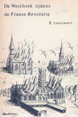
In 1789 kwam er ook een opstand of revolte gekend als de 'Brabantse Omwenteling'. Revolte tegen de verlichte despoot Oostenrijkse keizer Jozef II. Einde van het jaar 1790 kon Oostenrijk het gezag herstellen.
Op 20 september 1792 werd het
Oostenrijkse leger een zware nederlaag toegediend door het Franse leger.
Geallieerde troepen uit Engeland, Oostenrijk, Nederland en Hannover trokken in augustus
1793 door Veurne-Ambacht met de bedoeling om het leger van de Franse republiek op de
knieën te krijgen. Tevergeefs.
In oktober 1793 nam het Frans leger Veurne-Ambacht in, onder leiding van een schitterende
23-jarige Franse generaal Dominique Vandamme. Wanneer de Franse troepen in 1794 de
Oostenrijkse Nederlanden binnenvallen, troffen ze een open stad Veurne aan want keizer
Jozef II had de volledige stadsversterking laten slopen. De eisen van generaal Vandamme
waren onverbiddelijk voor Veurne.
Op
1 oktober 1795 werd de Westhoek geannexeerd en officieel ingelijfd bij Frankrijk in, onder de naam Département de La Lys en de inwoners kregen de Franse nationaliteit. Bijgevolg kwam het oude gebied van de Kasselrij Veurne te liggen binnen het Leie departement, dat uit West-Vlaanderen en Brugge was samengesteld.In het 336 pagina tellend boek (D/1978/Roger Lanszweert/uitgever), "De Westhoek tijdens de Franse Revolutie", beschrijft Roger Lanszweert (ingeleid door Johan Vande Lanotte) zeer gedetailleerd de gebeurtenissen in de Westhoek, tijdens de revolutiejaren.
Na 20 jaar verlieten de Franse legers gedurende de winter van
1813-1814 de Belgische departementen. In de Slag bij Waterloo (18 juni 1815) werd Napoleon definitief verslagen.15 jaar Nederland (1814 – 1830)
Het verdrag van Wenen kende aan Willem van Oranje op
9 juni 1815 het Koninkrijk der Nederlanden toe.Dat bracht de Verenigde Provinciën, de Zuidelijke Nederlanden en het
Prinsbisdom Luik in één Koninkrijk samen.
Koning Willem II bezocht tweemaal de stad. Toen Willem I als vorst op
Koninkrijk België (1830 – 2014)
Uiteindelijk bleek ook deze integratie van korte duur, want in
1830-1831 verkreeg België zijn onafhankelijkheid als een parlementaire monarchie. In 1831
kwam Leopold I als toekomstig koning via Dover en Calais in Veurne voorbij. Er werd de
koning in het huis (gelegen in de Pannestraat) van de commandant van de burgerwacht, Louis
Ollevier, een galadiner aangeboden.
Op 4 augustus 1914 begon 'den grooten oorlog'.
De
eerste wereldoorlog. Halfweg oktober 1914 werd Veurne met grote
stromen vluchtelingen geconfronteerd.
Op 28 oktober werd het gebied rond de IJzer onder water gezet (militairen van het genie
tezamen met Karel Cogge en Hendrik Geeraert). Koning Albert vestigde zijn hoofdkwartier op
het stadhuis.
De wapenstilstand in Compiègne op 11
november 1918 betekende het einde van deze oorlog
Op 10 mei 1940 waren er reeds Duitse gevechtsvliegtuigen boven Veurne. De tweede wereldoorlog was begonnen.
Eind mei 1940 hielden de Britten onder Montgomery het
Duitse leger drie dagen tegen, aan de Wulpenvaart en aan het Zwaantje (Bulskamp) in het
kader van operatie Dynamo.
Operatie Dynamo moet herinnerd worden als een
schandelijke afgang van een verslagen, ongedisciplineerd en onvoorbereid leger
en militairen op de vlucht. Veel van die Engelse soldaten op de vlucht, waren
dronken en zagen er met bloeddoorlopen ogen en ongewassen en ongeschoren,
verwilderd uit. Er heerste totale chaos. Op hun legercamions lagen goederen en
drank die ze gestolen hadden uit de leegstaande huizen in het binnenland van
burgers die gevlucht waren. Die Engelse soldaten hadden werkelijk van alles
gestolen: sterke drank, flessen dure wijn, tafellinnen, tafelserviezen, zilveren
bestekken, antieke meubels enz.
De Duitse artilleriebeschietingen beschadigden kerken en
openbare gebouwen. Een 80-tal huizen werd vernield en een honderdtal zwaar beschadigd.
Ook vielen burgerslachtoffers als gevolg van die chaotische vlucht van de
Engelsen.
Om 02:41 uur in de ochtend van 7 mei 1945 tekende generaal Alfred Jodl in Reims de documenten voor onvoorwaardelijke overgave van alle Duitse strijdkrachten aan de geallieerden. Het bevatte de frase: "Alle strijdkrachten onder Duits gezag staken hun actieve operaties om 23:01 uur centraal Europese tijd op 8 mei 1945."
Het Marktplein
1. De noordwestzijde van het marktplein: Het Stadhuis en Conciërgerie, Het Landhuis
en het Belfort.
2. De noordkant van de markt: 5 huizen met trapgevels
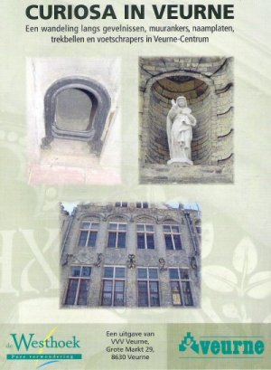
3. De westzijde van de markt: huis De Valk (1624), huis De Zwaan, Kredietbank, herberg de Vette Os
4. De oostzijde van de markt: het Spaans Paviljoen, het voormalig Vleeshuis,huis Mouton, de Botermand, de Kroon, monumentje generaal Michel (Veurne open stad waardoor Duitsers stopten met bombarderen).
5. De zuidkant van de markt: De Hoge Wacht - Nachtwacht gebouw, Den Hert, huize Vandendries
6. De kerken: Sint-Niklaaskerk ; Sint-Walburgakerk
Vleeshouwerstraat: Klooster Norbertinessen Zwarte Nonnestraat: Klooster van de Zwartzusters ; Arrondissementscommissariaat; Huisn° 19 (Delvaux) en 20 (Rococco)Pannestraat:
Pastorie van Sint-Walburga ; Zeemanshuis ; Huisn° 3 (laat-classistisch) en 5 (Rococco inslag)Noordstraat:
Huis n°1 (RTT gebouw) ; n°11 (Nobele Roos) ; n°16 - 18 (Muziekacademie) ; n°21 (Latijnse school); n° 32 (Stadkasteel Dumoulin): ooit eigendom van burggravin Louise Preud'homme d'Hailly de Nieuport en jonkheer Ernest de Thibault de Boesinghe.Ooststraat
Zuidstraat
Klaverstraat
Boterweegschaalstraat
Karel Coggelaan:
Sint-Niklaasabdij (Bisschoppelijk College); Sint-JanshospitaalLindendreef
In de deelgemeente van Veurne zijn er ook heel wat
bezienswaardigheden.
Speciale vermelding voor
het Ooievaarsnest (Wulveringem): dit vroegere leenhof behoorde toe aan Simon
van Vlaanderen (1477) en later aan de families de Morbeke en de Recourt.
Vermoedelijk ligt hier de bakermat van de Blauwvoeten. Onder leiding van
Ryckewaert Blaevoet en zijn schoonbroer Heribert van Wulveringem vochten ze
tegen gravin Mathilde van Portugal, de weduwe van Filips van de Elzas.
Hendrik Conscience verwerkt de vete tussen de Ingeryckx en de Blaevoeten in
zijn boek "De Kerels van Vlaanderen".
Boek: De Kasselrij Veurne - auteur: Paul Vandewalle, Ph. D.
Boek: Veurne door de eeuwen heen - auteur: Jacques Bauwens
Webstek stad Veurne - geschiedenis van Veurne
Curiosa in Veurne: auteur Johan Den Baes - VVV Veurne vzw
Verrassende Veurnse vrouwen: auteur Johan Den Baes - VVV Veurne vzw
Langs Vlaamse wegen: VTB/VAB - auteur Johan Den Baes - brochure niet meer te koop
Inventaris van het onroerend erfgoed Veurne
Geschiedenis van de Zwartzusters in Veurne
Inventaris van de beeldnissen en de gevelstenen
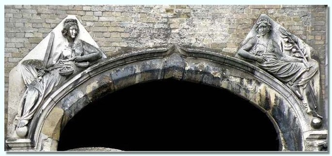
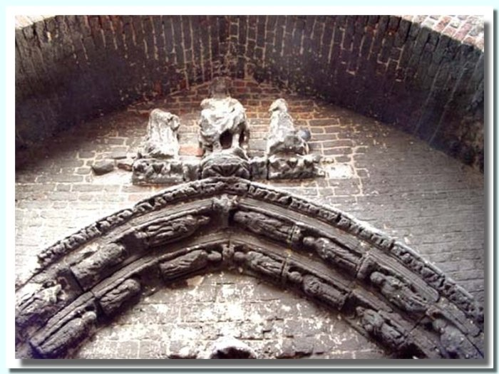
Platte grond van de Sint-Niklaaskerk Veurne (uit folder van de kerkfabriek)
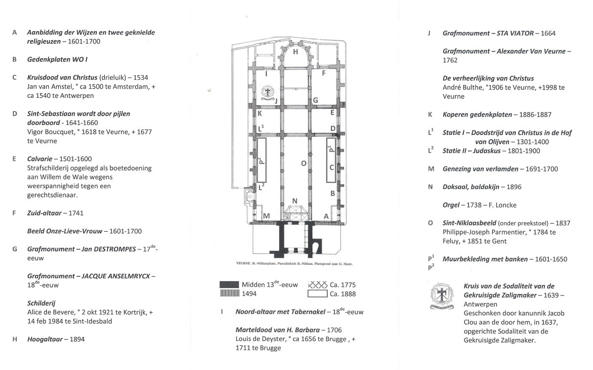
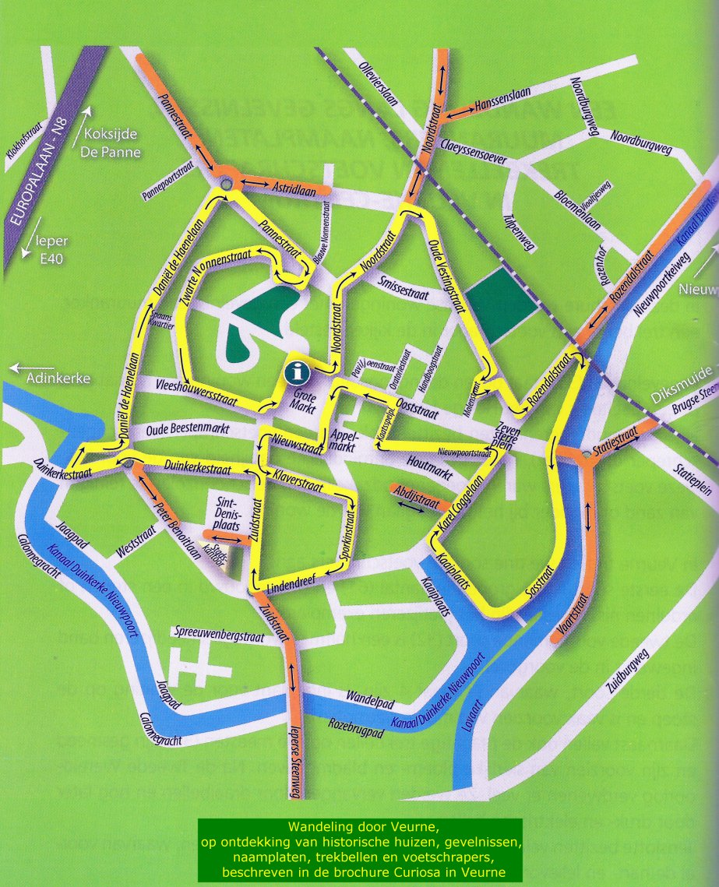